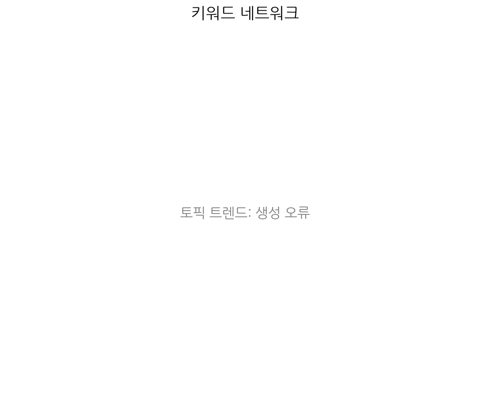
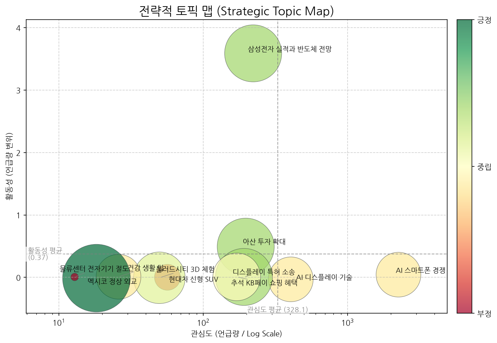
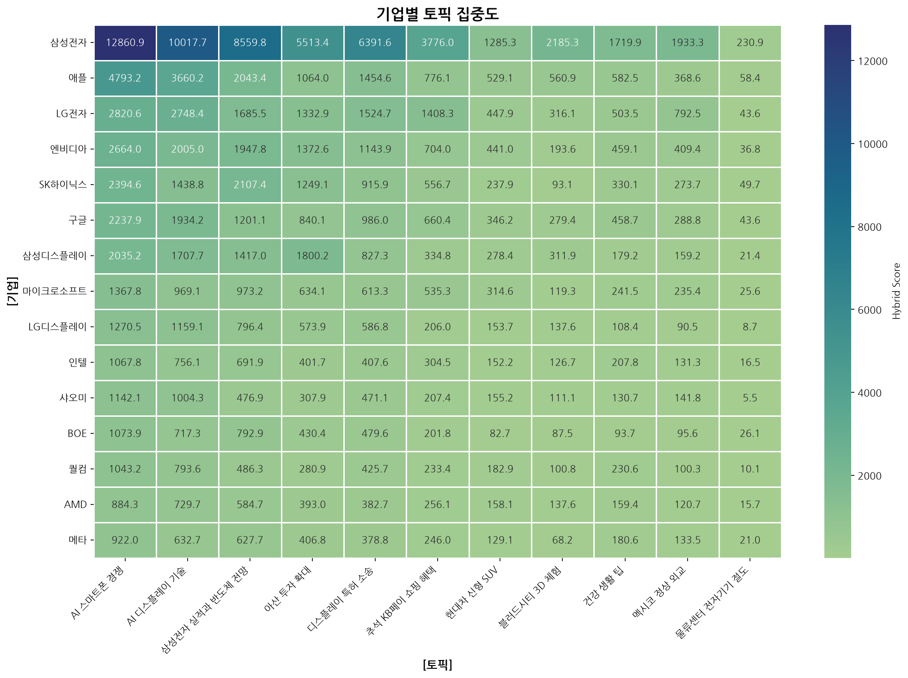
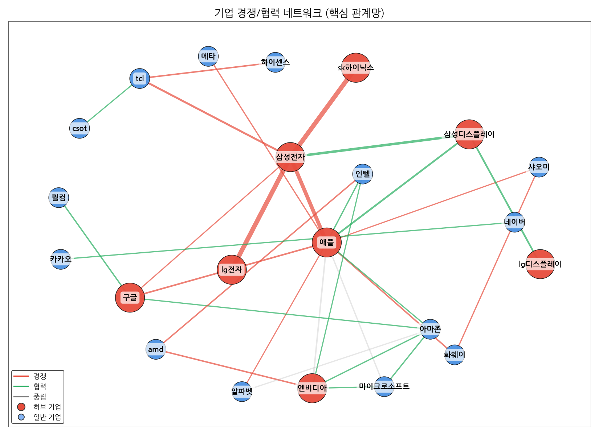
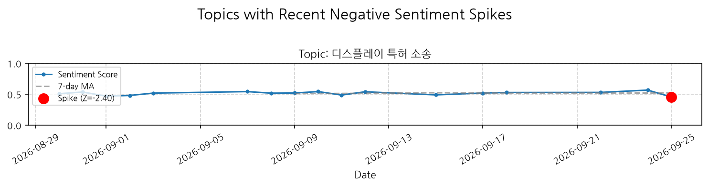
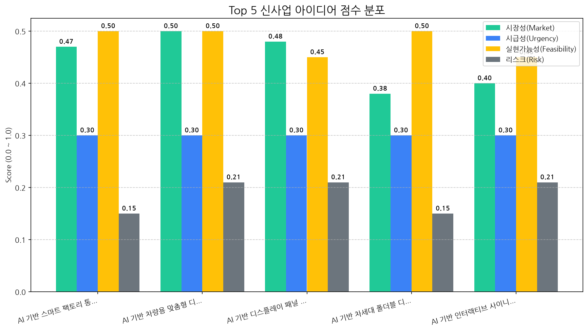

지난달 시장의 핵심 변화: 2026년 8월 30일부터 9월 28일까지 한 달간, 디스플레이 시장은 삼성전자 실적 호조와 이에 따른 반도체 업황 전망 개선이라는 긍정적 신호 속에서 변화를 맞이했습니다. 이는 당사의 주요 사업 영역에 대한 투자 심리 회복과 신규 사업 추진 동력을 강화할 수 있는 기회를 시사합니다.
우리에게 가장 큰 기회: AI 기반 스마트 팩토리 통합 모니터링 디스플레이 시스템이 가장 큰 기회로 부상했습니다. 삼성전자를 비롯한 주요 IT 기업들의 반도체 투자 확대 전망은 스마트 팩토리 구축 수요 증대로 직결될 가능성이 높습니다. 당사의 AI 기반 시스템은 제조 공정의 실시간 모니터링, 데이터 분석, 예측 유지보수 등 스마트 팩토리 핵심 기능을 통합 제공함으로써, 고객사의 생산성 향상과 비용 절감에 필수적인 솔루션으로 자리매김할 수 있습니다. 특히, AI 기술과의 시너지를 통해 기존 디스플레이 시스템 대비 월등한 경쟁 우위를 확보할 수 있습니다.
우리에게 가장 큰 위협: 주어진 데이터에서 명확하게 식별된 'Top Risk'는 N/A로 나타났습니다. 이는 지난달 시장 상황이 당사에게 직접적인 위협 요인을 야기하지 않았음을 의미합니다. 그러나 이는 긍정적인 신호일 뿐, 시장은 언제든 변화할 수 있기에 지속적인 시장 모니터링과 잠재적 리스크 관리는 필수적입니다.
다음 분기 최우선 전략 방향:
AI 기반 스마트 팩토리 시스템 사업의 공격적 확장:
시장 전망에 기반한 반도체 관련 디스플레이 사업 포트폴리오 점검 및 강화:
AI 분석 실패 (API 요청 한도 초과)

| 토픽 | 요약 | 핵심 키워드 |
|---|---|---|
| AI 스마트폰 경쟁 | AI 기술을 탑재한 스마트폰, 특히 아이폰과 갤럭시의 경쟁 구도와 반도체, 디스플레이 등 핵심 기술 동향을 다룹니다. | ai, 아이폰, 반도체 |
| AI 디스플레이 기술 | AI 기술이 접목된 차세대 OLED 및 폴더블 디스플레이 기술 동향과 삼성전자, LG, 애플 등 주요 기업들의 신제품 및 IFA 등 전시회 정보를 다룹니다. | ai, oled, 중국 |
| 삼성전자 실적과 반도체 전망 | 삼성전자의 3분기 실적 부진 속에서 반도체 업황 악화와 AI 수요 증가, 그리고 이에 따른 메모리 가격 하락 및 투자 계획 등의 내용을 다룹니다. | 반도체, ai, 삼성전자 |
| 아산 투자 확대 | 충남 아산시에서 삼성디스플레이를 중심으로 반도체, 디스플레이, 자동차, AI 등 첨단 산업 분야의 대규모 신규 공장 투자가 이루어지고 있습니다. | 투자, 아산, 부지에 |
| 디스플레이 특허 소송 | 삼성전자와 TCL 등 국내외 디스플레이 기업들이 미니 LED, OLED, LCD 관련 특허 침해 소송을 진행하며 치열한 기술 경쟁을 벌이고 있습니다. | 인도, led, 미니 |
| 추석 KB페이 쇼핑 혜택 | 추석 명절을 맞아 KB페이로 가전 상품을 구매하면 할인 혜택을 제공하며, AI 쇼핑 상품도 선보인다. | 정답은, 문제는, 할인 |
| 현대차 신형 SUV | 현대차가 플레오스, GV90, PV7 등의 신형 SUV 및 PBV 모델을 출시하며 전기차, 하이브리드 등 전동화 전략을 강화하고, 차체, 실내, 2열, 도어 등 다양한 디자인 및 안전 시스템을 적용했다. | 주행, 차량, 플레오스 |
| 블러드시티 3D 체험 | 에버랜드에서 선보이는 삼성전자 스페이셜 사이니지의 무안경 3D 호러 영상 체험에 대한 내용입니다. | 호러, 3d, 블러드시티 |
| 건강 생활 팁 | 오늘 하루의 건강과 관련된 다양한 정보들을 다룹니다. 피로 해소, 수면 개선, 건강한 식생활, 스트레스 관리 등 신체 및 정신 건강을 위한 유용한 팁들을 제공합니다. | 것이, 어깨, 아주 |
| 멕시코 정상 외교 | 멕시코 대통령의 방문과 FTA, 한국 기업들의 현지 진출 및 한국 문화(BTS, 아모레퍼시픽, 농심 등) 관련 내용이 담긴 뉴스입니다. | 멕시코, 대통령, 부스에서는 |
| 물류센터 전자기기 절도 | 물류센터에서 전자기기를 훔쳐 도박 자금으로 사용한 혐의로 기소된 A씨의 항소심 내용입니다. | 훔친, a씨는, 징역 |

해당 토픽: 삼성전자 실적과 반도체 전망, 아산 투자 확대
권고 전략: AI 수요 증가에 따른 반도체 시장 회복에 대비하고, 아산 지역 투자 확대를 활용한 생산 효율성 증대 및 공급망 강화에 집중해야 합니다.
해당 토픽: AI 스마트폰 경쟁
권고 전략: AI 스마트폰의 핵심 부품인 디스플레이의 차별화된 기술 경쟁력을 확보하여 시장 우위를 선점해야 합니다.
해당 토픽: AI 디스플레이 기술, 디스플레이 특허 소송
권고 전략: AI 접목 디스플레이 기술 개발에 주력하고, 동시에 특허 소송에 대한 철저한 대비 및 대응 전략을 수립해야 합니다.
해당 토픽: 추석 KB페이 쇼핑 혜택, 건강 생활 팁, 멕시코 정상 외교, 현대차 신형 SUV, 블러드시티 3D 체험
권고 전략: 단기적 시장 이슈보다는 장기적인 기술 경쟁력 강화와 핵심 사업 영역에 대한 투자 및 연구 개발에 집중해야 합니다.
AI 분석 실패 (API 요청 한도 초과)


| 관계 | 유형 | 강도(언급빈도) | 주요 연관 근거 |
|---|---|---|---|
| sk하이닉스 ↔ 삼성전자 | rivalry | 1261 | “CXMT DDR5, SK하이닉스와 성능 1% 차”…거세지는 ‘레드칩 어택’에 ... D램 이어 낸드도⋯ 중·일 낸드 공세에 삼성·SK ‘긴장’ “중국 D램 무섭게 컸다”…CXMT, 삼성·SK하이닉스 턱밑 추격 |
| lg전자 ↔ 삼성전자 | rivalry | 914 | "초대형·미니LED로 브라질 잡는다"… LG전자, 라인업 혁신과 파라나 거... "중국이 못 따라온다"…저가 공세속 'B2B 확대'나선 삼성·LG전자 유럽 안방 치고 들어온 中가전…삼성·LG, '기술·AS 격차'로 맞불 |
| 삼성디스플레이 ↔ 삼성전자 | partnership | 368 | 추석 앞두고 '상생 행보' 나선 삼성 , 협력사 대금 1.3조 조기 지급 충남 아산에 풀리는 삼성 113조 원 투자…대한민국 이끌 '첨단산업 중심... 씨에프테크놀로지,'기술 자립' 도전...수입 장비의 빈자리 국산 기술로... |
| 삼성디스플레이 ↔ 애플 | partnership | 230 | 메모리값에 맞은 애플…화풀이는 韓 OLED에 애플, 아이폰 원가 방어 나섰다… OLED 낮추고 메모리 공급망 흔든다 삼성 디스플레이 , 내년 애플 폴더블 ·아이패드 OLED 공급 목표 대폭 상향 |
| 애플 ↔ 엔비디아 | neutral | 168 | [강준영 칼럼] 韓·대만 반도체 '공존의 지혜' 찾아야 [뉴욕증시] 엔비디아발 AI 낙관론 재점화···세일즈포스 22%↑·옥타 28... [해외시황] 뉴욕증시, 워시 매파 발언·금리 인상 우려에 '하락'…나스닥... |
AI 분석 실패 또는 특이사항 없음.
AI 분석 실패 (API 요청 한도 초과)

대상: AI 분석 중...
전략: AI 분석 중...
대상: AI 분석 중...
전략: AI 분석 중...
대상: AI 분석 중...
전략: AI 분석 중...
대상: AI 분석 중...
전략: AI 분석 중...
AI 분석 실패 (API 요청 한도 초과)
AI 분석 실패 (API 요청 한도 초과)
| idea | value_prop | score | target_customer |
|---|---|---|---|
| AI 기반 스마트 팩토리 통합 모니터링 디스플레이 시스템 | AI 기반의 실시간 공정 데이터 분석 결과를 고해상도, 대형 디스플레이를 통해 시각화하여 생산 병목 현상, 품질 불량 등을 즉각적으로 파악하고 대응할 수 있도록 지원합니다. 당사의 제조 역량을 통해 안정적인 하드웨어 공급과 맞춤형 솔루션 구축이 가능합니다. | 3.6 | 글로벌 반도체 및 디스플레이 제조 기업 (생산/공정 관리 부서) |
| AI 기반 차량용 맞춤형 디스플레이 솔루션 | AI를 통해 운전자 및 탑승자의 니즈를 실시간으로 파악하여 최적화된 정보와 직관적인 인터페이스를 제공하는 안전하고 몰입감 있는 차량 경험을 선사합니다. 당사의 생산 능력과 품질 관리 시스템은 안정적인 대량 공급을 보장합니다. | 3.4 | 글로벌 완성차 OEM (프리미엄 및 전기차 브랜드) |
| AI 기반 디스플레이 패널 제조 공정 최적화 및 품질 예측 서비스 | AI가 실시간 공정 데이터를 분석하여 잠재적인 품질 불량을 사전에 예측하고, 최적의 공정 조건을 제안함으로써 불량률을 획기적으로 감소시키고 생산 수율을 향상시킵니다. 당사의 자체 제조 경험을 바탕으로 실질적인 문제 해결 능력을 제공합니다. | 3.3 | 글로벌 디스플레이 패널 제조 기업 (생산 기술 및 품질 관리 부서) |
| AI 기반 차세대 폴더블 디스플레이용 특수 코팅 및 소재 개발 | AI 기능 탑재를 지원하는 혁신적인 전기적 특성과 반복적인 접힘에도 뛰어난 내구성을 갖춘 특수 코팅 및 소재를 제공합니다. 당사의 제조 경험을 바탕으로 양산 가능성과 비용 효율성을 고려한 최적의 솔루션을 제공합니다. | 3.3 | 글로벌 스마트폰 및 IT 기기 제조 기업 (R&D 및 신소재 개발 부서) |
| AI 기반 인터랙티브 사이니지 솔루션 (리테일 및 공공) | AI가 사용자 행동을 인식하여 실시간으로 맞춤형 정보, 프로모션, 길 안내 등을 제공하며, 이를 통해 고객 참여를 유도하고 쇼핑 경험을 혁신합니다. 당사의 고품질 디스플레이와 안정적인 B2B 공급망은 일관된 브랜드 경험을 보장합니다. | 3.0 | 글로벌 리테일 기업 (패션, 백화점, 편의점 등), 공공기관 (박물관, 도서관, 공항 등) |

| Hypothesis | Target | KPI | Owner | Due |
|---|---|---|---|---|
| 글로벌 반도체 및 디스플레이 제조 기업의 생산/공정 관리 부서는 AI 기반의 실시간 공정 데이터 시각화 및 이상 감지 기능을 통해 생산 병목 현상 및 품질 불량 예측/대응 역량을 크게 향상시킬 수 있다고 인식하며, 이를 위한 솔루션 도입에 긍정적이다. | 주요 글로벌 반도체 제조 기업(삼성전자, SK하이닉스 등) 및 디스플레이 제조 기업(LG디스플레이, BOE 등)의 생산/공정 관리 부서 책임자 5명 대상 심층 인터뷰 및 데모 시연. | 인터뷰 대상자 중 3명 이상이 '잠재적 구매 의향'을 표명하고, 2명 이상이 후속 PoC(Proof of Concept) 논의를 제안하는 것. | 사업개발팀, 기술기획팀 | 2026-10-12 |
| 당사의 기존 디스플레이 제조 인프라와 대면적 공정 기술은 AI 기반 스마트 팩토리 통합 모니터링 디스플레이 시스템의 고품질 하드웨어 공급 및 맞춤형 솔루션 구축에 있어 경쟁사 대비 명확한 우위를 제공한다. | 잠재 고객사(Target 1)의 기존 MES/SCADA 시스템과 연동 가능한 API 및 데이터 포맷 호환성 분석, 그리고 당사 디스플레이 하드웨어의 통합 모니터링 시스템 적용 가능성 및 성능 검증. | 기존 시스템과의 연동 가능성 80% 이상 확보 및 성능 검증을 통해 당사 하드웨어의 우수성을 입증하는 기술 검토 보고서 작성. | 기술기획팀, R&D 센터 | 2026-10-12 |
| AI 분석 엔진과 연동된 실시간 공정 데이터 시각화, 이상 감지 및 예측 알람 기능은 고객사의 생산 효율성을 실질적으로 증대시키고, 데이터 보안 및 관리 요구사항을 충족할 수 있다. | 선정된 잠재 고객사 1곳을 대상으로 최소 1개월간 파일럿 PoC(Proof of Concept)를 진행하여, AI 분석 엔진의 정확도, 시스템의 안정성, 데이터 보안성, 그리고 실제 생산성 향상 효과를 측정. | PoC 기간 동안 AI 분석 엔진의 예측 정확도 90% 이상 달성, 시스템 가동률 99% 이상 유지, 데이터 유출 사고 0건 기록, 그리고 파일럿 고객사로부터 생산성 향상 관련 긍정적인 피드백 확보 (정량적 지표 포함). | 프로젝트팀, R&D 센터, 영업팀 | 2026-10-12 |